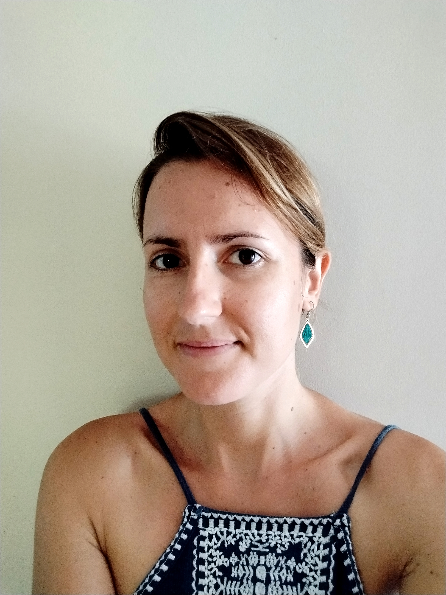

Membre du CÉRI • Ingénieur de recherche en environnement marin
Contact : maslinmathilde@gmail.com
Ingénieur de recherche en environnement marin chez la société Marepolis, spécialisée dans le secteur des politiques de la mer, Mathilde Maslin est en détachement en Polynésie française, dans les locaux du laboratoire de recherche Richard B. Gump Station (Université de Californie) sur l’île de Moorea. Elle a participé au dernier ouvrage collectif du CERI intitulé "La conquête des espaces maritimes et les nouveaux défis de l'environnement".
Depuis Août 2023 : Ingénieur de recherche en environnement marin chez la société Marepolis, spécialisée dans le secteur des politiques de la mer. En détachement en Polynésie française, dans les locaux du laboratoire de recherche Richard B. Gump Station (Université de Californie) sur l’île de Moorea. Gestion de projets en qualité environnementale, études d’impact écologiques et aménagement du territoire ultramarin. Plongée professionnelle, missions de terrain, analyses en laboratoire, rédaction technique et scientifique. Entretien de la zone lagonaire et médiation auprès de l’hôtel Intercontinental Tahiti Resort & Spa. Collaboration avec l’Union Internationale pour la Conservation de la Nature en tant que co-leadeuse du projet de classification des récifs coralliens du Pacifique sur la Liste Rouge des Écosystèmes.
Séminaires dispensés en anglais et en français le long du trajet, animation de l’édition 2023 de l’exposition flottante « Millimages de récifs » en tant que lauréate du concours photo.
Restauration et entretien des récifs coralliens, gestion des activités et évènements avec la clientèle (dont conférences), médiation scientifique et environnementale (mairies, écoles, ONG, employés de l’hôtel, grand public).
Supports théoriques et bibliographiques, cas pratiques adaptés aux différents niveaux scolaires pour aider à inculquer les principes du raisonnement scientifique dès le plus jeune âge.
Étude de faisabilité d’une nouvelle filière aquacole en Polynésie française. Missions trimestrielles de terrain, travaux de laboratoire (écologie, biologie, chimie), rédaction de rapports de mission, bilans techniques et scientifiques en comités directifs. Séminaires de présentation des travaux à une audience internationale (Asie : ISCMNP, Europe : ICRS).
Travaux de terrain (collecte et suivi des populations) et de laboratoire (biométrie, lyophilisation, dissection), gestion informatique de bases de données, cartographie des milieux aquatiques, rédaction de protocoles techniques d’intervention.
Encadrement / formation d’étudiants en master : statistiques, cartographie, usage du laboratoire.
Campagne de terrain embarquée, identification des espèces marines récifales, mesures de données écologiques et biologiques.
Encadrement/formation d’étudiants en licence : travaux pratiques de zoologie, écologie, échantillonnage lors de sorties terrain.
⩥ Article scientifique en tant qu’auteur principal (ZSL).
Février - Août 2016 : Semestre d’étude à l’Universidad Autónoma de Baja California au Mexique.
Cursus d’océanologie suivi dans la Faculté des Sciences Marines. Cours de biologie marine, aquaculture, écologie de la zone côtière.
Travaux de terrain en autonomie (écologie du littoral), rédaction de rapports scientifiques, rédaction de protocoles de recherche, animation de réunions de laboratoire.
Article scientifique en tant que co-auteur (Hal Archives Ouvertes).